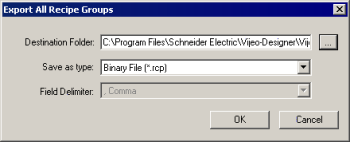
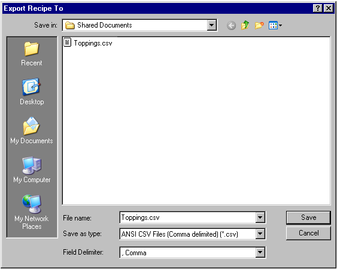

|
|
|
|
|
|
|
|
The following sections describe how to:
Right-click the Recipes node and select Export All Recipe Groups.

Export All Recipe Groups is only available if there is one or more Recipe Groups in the Target's Recipes node.
Specify the destination folder and file format for the Recipe Groups. If you select .txt as the file format, Field Delimiter is enabled and you can select from a list of standard delimiters.

When exporting, the Recipe Group file can be in one of five different file formats:
ANSI CSV Files (*.csv)—saves as a CSV file using comma or semi-colon as a value separator.
ANSI TXT Files (*.txt)—saves as a text file. Specify the file's field delimiter from the Field Delimiter drop-down list.
Unicode CSV Files (*.csv)—saves as a CSV file using comma or semi-colon as a value separator.
Unicode TXT Files (*.txt)—saves as a text file. Specify the file's field delimiter from the Field Delimiter drop-down list.
Binary File (*.rcp)—saves as a binary file.
Unicode Common Recipe CSV Files (*.csv)—saves as a common recipe CSV format.
Click OK to export the Recipe Groups.
Your exported recipe group files will be located in the destination folder that you selected. You will find a directory for each recipe group in the target node and a recipe data file (in the file format that you selected) in the directory.
Right-click the recipe group and select Export Recipe Group.
Specify the folder, file name, and file type that you want to export the file as.

When exporting, you can save the recipe group file in one of five different file type formats:
ANSI CSV Files (*.csv)—saves as a CSV file using comma or semi-colon as a value separator.
ANSI TXT Files (*.txt)—saves as a text file. Specify the file's field delimiter from the Field Delimiter drop-down list.
Unicode CSV Files (*.csv)—saves as a CSV file using comma or semi-colon as a value separator.
Unicode TXT Files (*.txt)—saves as a text file. Specify the file's field delimiter from the Field Delimiter drop-down list.
Binary File (*.rcp)—saves as a binary file.
Unicode Common Recipe CSV Files (*.csv)—saves as a common recipe CSV format.
Click Save to Export the Recipe Group.